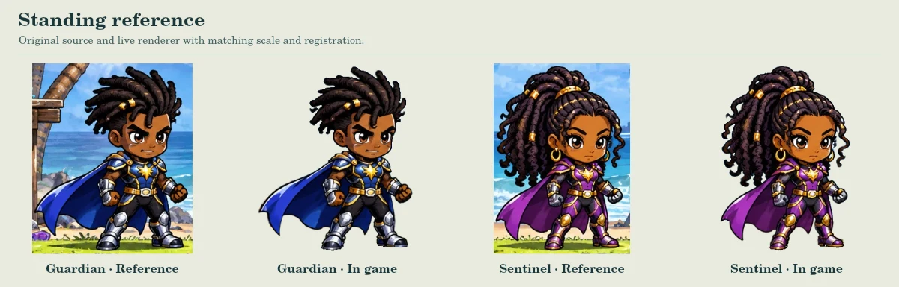
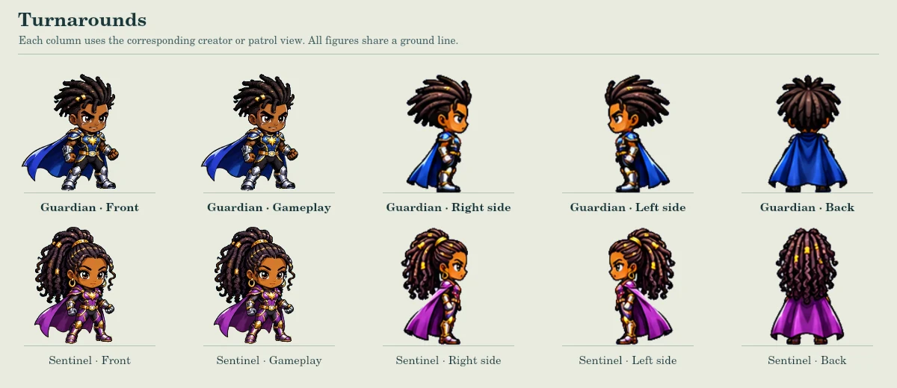
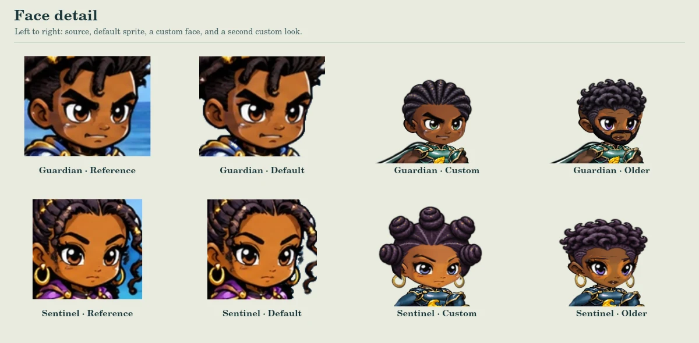
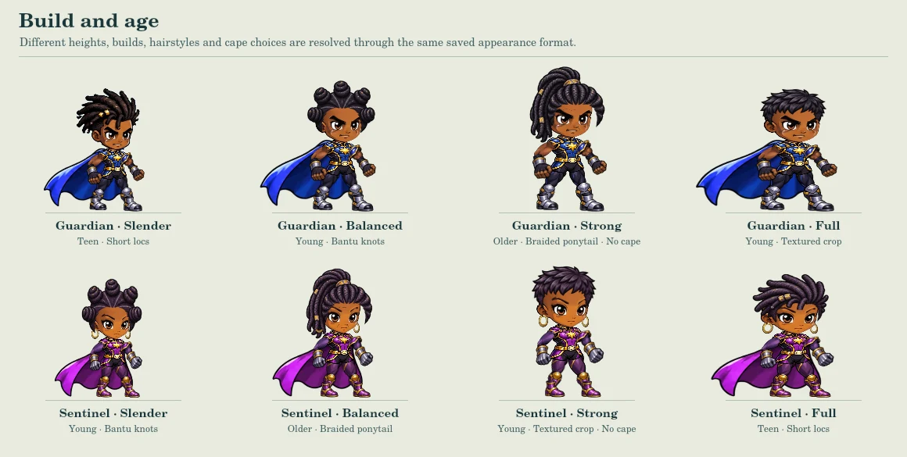
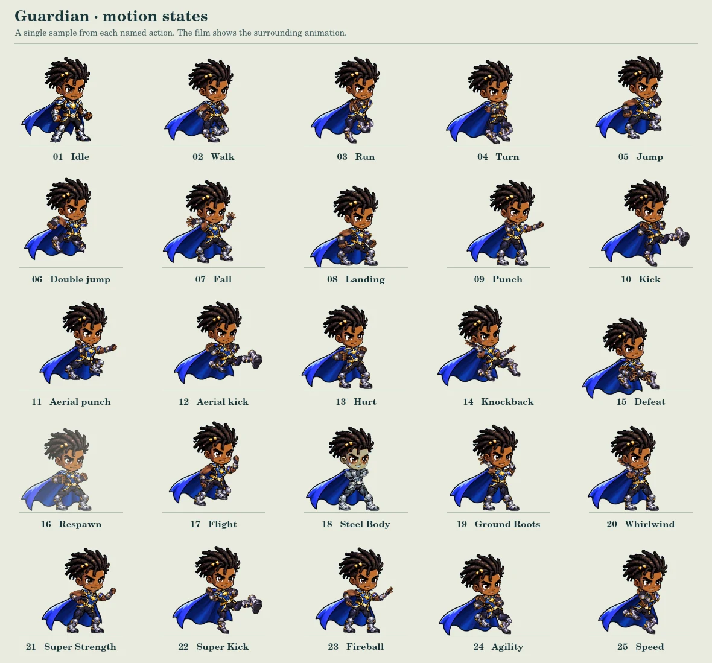
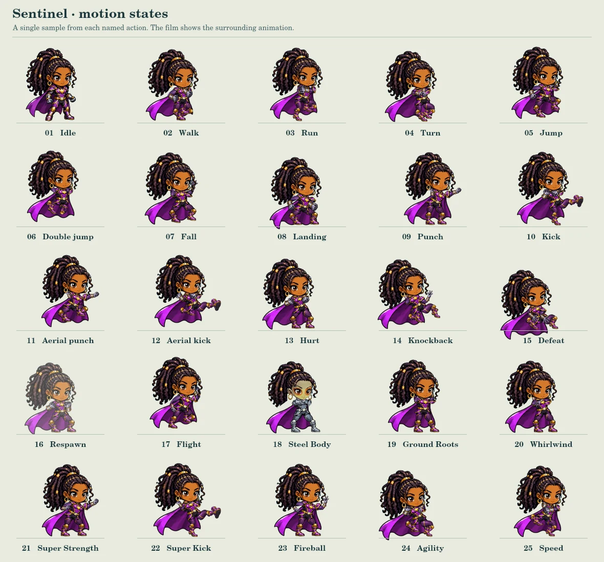
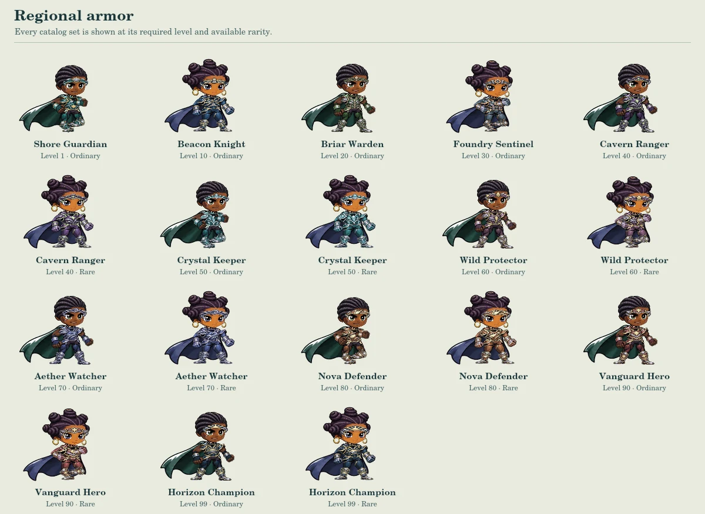
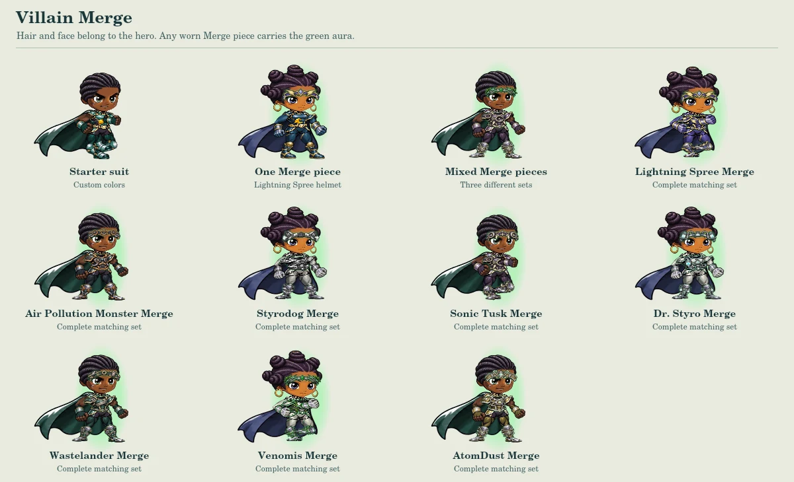
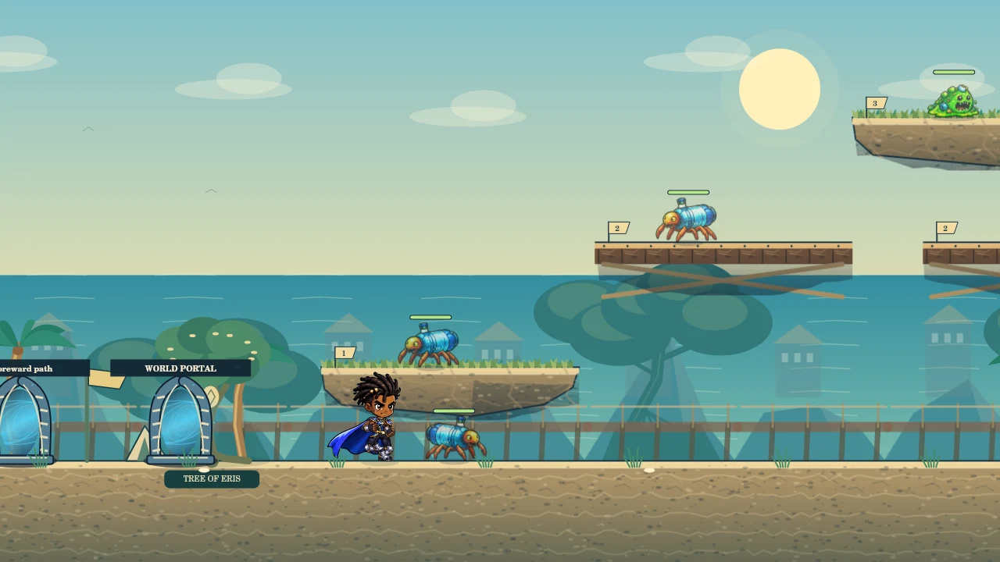
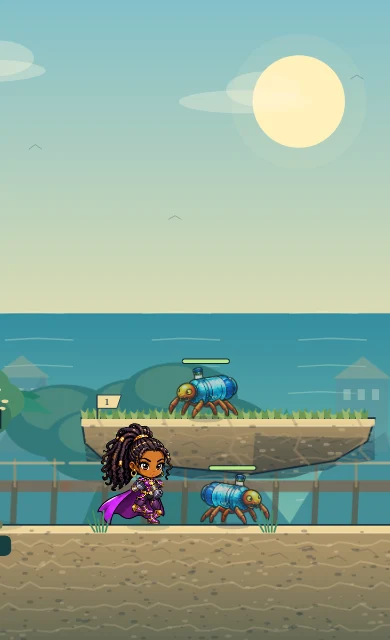

Hero workshop
Inspect the Guardian and Sentinel at the same scale, then take either hero out onto Sunwash Strand.
Try a pose
Compare how hair, armor and capes sit on each hero. Use Hold pose to inspect a frame.
Loading hero artwork…
Reference and turnarounds




Faces, builds and hair




Open a full-size contact sheet to compare every hairstyle on both heroes. Front · Side · Back · Hair-layer artwork


Animation film and pose sheets
The film shows the character poses on starter and customized heroes. Play a patrol to see projectiles and power effects during combat.
Inspect the transparent game sprites. Guardian sheet 1 · Sentinel sheet 1 · All sheets and frame coordinates





Regional armor and Villain Merge




Gameplay scale
These captures use the gameplay canvas, its normal camera, and the integrated Bottle Critter. The browser adds controls around this canvas.




Portrait playtest with touch controls · Desktop playtest with the full HUD